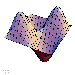
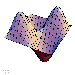

Whoever said that math couldn't be both fun and visually pleasing at the same time? Here you'll find a collection of graphics submitted by UCSD mathematics majors. Click on the tumbnails below to view the graphics. If you would like to contribute to our graphics library, submit your graphics to us via email.
 



Mathematical Computer Graphics
UC San Diego's Mathematics Department offers multiple classes on creating software programs to generate and render projects such as these. If you are the least bit interested, we encourage you to look into the following courses:
- MATH 155A: Computer Graphics
- MATH 155B: Advanced Computer Graphics
- MATH 173: Mathematical Software- Scientific Programming